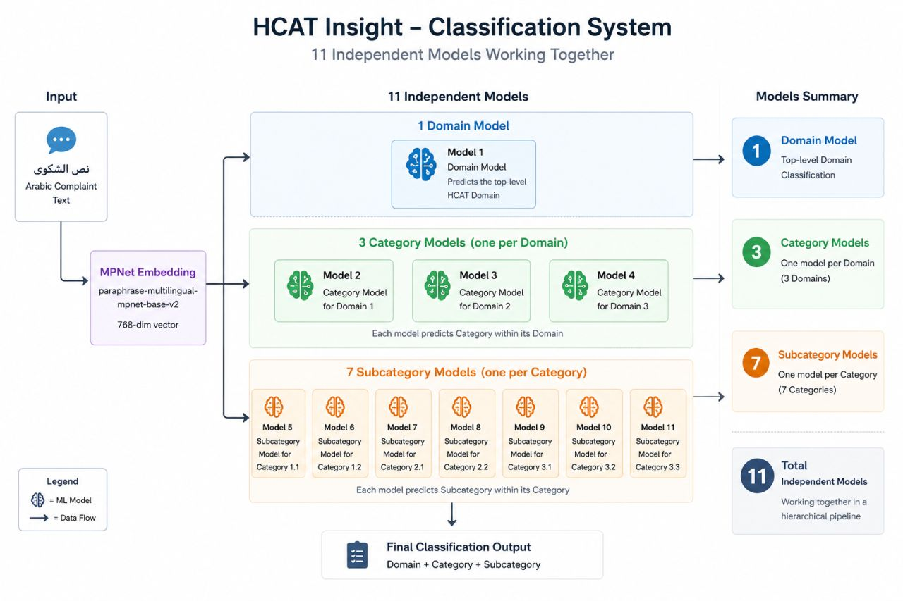

What we decided before and while building models for a hospital complaint classifier (HCAT Insight) — including the parts that did not work very well.
In practice the arrows also go backwards: building produces results, and results change the plan.
What should we try, why, under what conditions — and how will we judge it?
| Planning | Building | |
|---|---|---|
| Question | What should we try, and how will we judge it? | Implement, train, tune, evaluate |
| Output | Candidates, baselines, metrics, risks | Fitted models and results |
| Example | “Should the labels be modelled as a hierarchy?” | “Train a model on branch 2.” |
…and around again. The example goes through this loop a few times.
111 before I started · ~500 when the job began · 476 after cleaning. The 1,816 is a published study on English GP complaints, for context.
First plan: nine independent classifiers. Hold that thought.
(A tenth label, Status, was constant and was dropped — the easiest model we ever built.)
Dashed line ≈ 50 per class, a rule of thumb used in the project notes.
Red-flag complaints: 19 records. Harm is skewed toward severe cases because it is a cardiac hospital.
RAM and latency numbers in our docs are estimates, not measurements. RAM was roughly “8 GB or less”.
| Option | Fits the environment? | What actually happened |
|---|---|---|
| Cloud LLM, zero-shot | No (offline) | Only as published results for reference |
| Local LLM | Probably not (RAM) | Never tried |
| Fine-tuned BERT / AraBERT, multi-head | Heavy on CPU | Built and tested; clearly weaker on our small data |
| TF-IDF + logistic regression | Yes | Tested early (111 records); weaker |
| Frozen sentence embeddings + LR / RF / XGBoost | Yes | Used |
Embedding model: paraphrase-multilingual-mpnet-base-v2 (768-dim). It handles Arabic and Arabic–English mixing, and runs on CPU.
So: it did not fit the environment — we never measured how it would have done.
| Question | What we knew | Consequence for the plan |
|---|---|---|
| Cloud inference? | No internet | Everything local |
| GPU / enough RAM for an LLM? | No / limited | Frozen encoder, no fine-tuning |
| Large dataset? | 380 training records | Classical classifiers |
| Arabic text? | Standard + dialect + English terms | Multilingual encoder |
| Balanced labels? | Dominant class 60–93% | Macro-F1, class weights |
| Independent labels? | Unknown at first | (next slides) |
| Are mistakes equally costly? | No — missing a severe case is worst | Human review for high-risk predictions |
| Retrainable? | Data keeps growing | Store embeddings once, retrain classifiers cheaply |
Not in the plan: cross-validation, a separate validation set, a “always predict the biggest class” baseline. More on that near the end.
Logistic regression on stored embeddings, test split of about 96 records.
| Target (model) | Accuracy | What was behind it |
|---|---|---|
| Improvement type (random forest) | 98.9% | Macro-F1 ≈ 0.50: it predicted “ordinary” almost always |
| Severity (random forest) | 82.8% | Macro-F1 ≈ 0.40: mostly “low” |
| Severity (ordinal model, later) | ≈ 73% | Recall: low 1.00, medium 0, high 0 |
| Harm, binary high / low | 93.8% | 0 of the 6 high-harm test cases were found |
What we changed: macro-F1 as the main metric, look at per-class recall, class weights, and keep a human on every high-risk prediction.
Side note: the “F1” we first reported for Severity looks like weighted F1. Recomputed from the per-class table, macro-F1 is ≈ 0.28. Worth fixing the metric definition in the plan.
A reframing that helped: every target is basically its own small project, with its own problem and its own failure modes.
Annotators effectively work in an order: Domain → Category → Sub-category → Severity → Stage → Harm.
later labels depend on earlier ones (simplified)
Only considered; never built.

The Management branch is an easier two-class problem (Environment vs Institutional Processes); always predicting the larger class gives roughly 64%.
| Target | Input text | Nature of the target | Design we ended up with |
|---|---|---|---|
| Domain, Category, Sub-category | Patient | Tree | One model per branch |
| Severity | Patient + hospital | Ordered; depends on context | Ordinal logistic regression |
| Harm | Patient + hospital | Ordered; rare classes | Binary high/low triage + finer model |
| Stage | Hospital | Often several stages, one label | Sentence-level concept scores (next slide) |
| Improvement type | Patient | Rare event | Simple classifier + human confirmation |
Which text to use per target came from comparing patient text, hospital text, and both.
Several sub-category branches had 3–6 test records. A score on 4 records says very little.
| Level | Examples (final run, Feb 2026, 18 models) |
|---|---|
| fairly reliable | Category inside Management (F1 ≈ 0.85) and Relational (≈ 0.82); improvement type for ordinary complaints |
| moderate | Domain, Category inside Clinical (≈ 0.59), Severity “low” |
| weak | Stage (≈ 0.25), fine-grained Harm, Severity medium/high, high-harm detection (0 of 6) |
| not used | 78-class and 73-class labels |
Operating rules: predictions are suggestions; high severity, high harm and red flag always need a person; retraining may not drop any model by more than 5 points of F1.
Some F1 values in that report look weighted rather than macro (see appendix).
| Published study (2025) | Our case | |
|---|---|---|
| Data | 1,816 English GP complaints | 476 Arabic cardiac-hospital complaints |
| Method | GPT-4o and others, zero-shot | Embeddings + classical models, offline CPU |
| Domain | 79.4% (κ 0.62) | ≈ 82% in one run, lower in a later run |
| Category | 69.8% (κ 0.57) | 7-class flat ≈ 60%; one easy 2-class branch ≈ 85% |
| Harm | 74.2% (κ 0.16) | binary only, missed the rare class |
Different language, taxonomy, class structure and test size — so it was useful for choosing a threshold, not for ranking.
| What happened | What I would put in the plan |
|---|---|
| One random 80/20 split; some branches tested on 14–18 records | Stratified cross-validation, with intervals |
| Same test numbers used to pick models and to report them | A separate validation set |
| No “always predict the biggest class” baseline | Report it next to every result |
| Kappa planned, never computed for our models | Compute it, or drop it from the plan |
| Macro and weighted F1 mixed up | Fix metric definitions up front |
| One early Stage baseline ran on the wrong text column | Double-check baselines before redesigning around them |
| Decision | In this project |
|---|---|
| Problem task, target, structure | Nine targets from two texts: a tree, two ordered ones, one rare-event |
| Data size, imbalance, representation | 380 train records; dominant classes 60–93%; frozen multilingual embeddings |
| Models families, baselines | LR baseline; LR/RF/XGBoost; stacked; hierarchical; ordinal; LLM and fine-tuned BERT as options |
| Environment compute, privacy, risk | Offline CPU VM; person confirms high-risk predictions |
| Evaluation metrics, split, experiments | Accuracy → macro-F1 + per-class recall; one 380/96 split; ~8 experiments listed for building |
| # | Experiment | Judged by |
|---|---|---|
| 1 | Logistic regression per target (the reference line) | macro-F1, per-class recall |
| 2 | Which text: patient, hospital, or both | macro-F1 |
| 3 | Flat vs stacked | gain bigger than the noise? |
| 4 | Hierarchical, one model per branch | per-class F1 vs “biggest class” baseline |
| 5 | Ordinal vs plain classes for Severity | weighted κ, recall of “high” |
| 6 | Stage: concept scores vs plain classifier | macro-F1 against a correct baseline |
| 7 | Harm: binary triage vs fine classes | recall of high harm |
| 8 | Retrain at 1.5× data | no model drops by more than 5 points |
Generic template: hypothesis · data · model · metric · threshold · when to stop.
Questions? Happy to go into any part of it.
| Target | LR accuracy / macro-F1 | RF accuracy / macro-F1 |
|---|---|---|
| Domain (3) | 79.6% / 0.696 | 74.2% / 0.503 |
| Category (7) | 60.2% / 0.448 | 56.9% / 0.241 |
| Sub-category (27) | 45.2% / 0.220 | 44.1% / 0.174 |
| Classification_ar (78) | 31.2% / 0.152 | 25.8% / 0.083 |
| Severity (3) | 74.2% / 0.396 | 82.8% / 0.401 |
| Stage (6) | 56.7% / 0.390 | 47.8% / 0.230 |
| Harm (6) | 47.3% / 0.244 | 41.8% / 0.247 |
| Improvement type (2) | 97.8% / 0.744 | 98.9% / 0.497 |
Source: project documentation (Model Experiments, §3). Earlier notes give slightly different values for some targets (e.g. Domain LR 81.7% / 0.722) because the data version differed.
| Model | Accuracy / macro-F1 | Test records |
|---|---|---|
| Domain (LR) | 82.0% / 0.722 | ~93–96 |
| Category in Clinical (Quality of care vs Safety) | 67% / 0.52 | 18 |
| Category in Management (Environment vs Inst. processes) | 85% / 0.83 | 61 |
| Category in Relational (3 classes) | 64% / 0.60 | 14 |
| Sub-category in Environment (3) | 95% / 0.88 | 21 |
| Sub-category in Institutional processes (6) | 56% / 0.36 | 39 |
| Sub-category in Safety (6) | 75% / 0.33 | 4 |
Small test sets: treat these as indications, not precise estimates. A later production run reported Domain at 57.3% on another split; the reason was not tracked down.